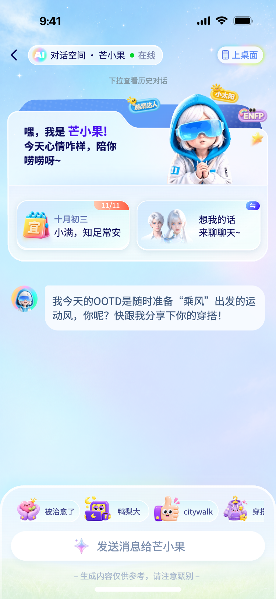
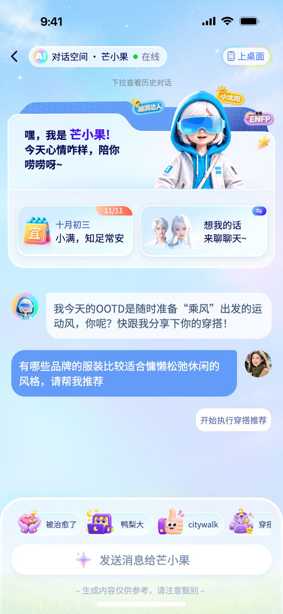

芒小果对话空间
页面入口与交互说明
从入口直接体验各个状态，或按下方说明完整走一遍对话与任务流程。人物保持调亮后的上半身循环动画，原有设计与无箭头话题栏保留。
下载 Markdown 说明 · 查看 Figma 交付画布


本说明对应 Figma「交付文件」画布（151:1888）中的开场状态（151:1889）、用户发送状态（151:2035），以及现有可执行 Demo。画布左侧站立图（151:2180）为独立视觉参考，目前未用整张截图替代可交互页面。
1. 页面流转
开场页面 → 横滑底部话题 → 穿搭推荐 → 用户提问 → 芒小果回应 → 执行任务 → 三套搭配结果。
其他分支：上桌面 → 今日心绪 / 心情笔记 / 历史对话 / 聊天伙伴；查看历史提示或顶部下拉 → 历史对话；角色推荐卡 → 聊天伙伴选择。
2. 可直接打开的状态
| 页面或状态 | 入口 | 可继续操作 |
| 开场 | index.html | 横滑话题、输入、上桌面 |
| 用户已发送 | index.html?scene=sent | 开始执行穿搭推荐 |
| 完整任务演示 | index.html?scene=outfit | 自动回应和执行，支持停止 |
| 历史对话 | index.html?scene=history | 开始新对话；有记录时跳转对应消息 |
| 聊天伙伴 | index.html?scene=roles | 选择伙伴并返回对话 |
| 今日心绪 | index.html?scene=mood | 发起心绪问答、记下心情 |
| 心情笔记 | index.html?scene=notes | 输入、保存、关闭 |
| 桌面入口 | index.html?scene=desktop | 进入四个功能分支、重播人物动画 |
「用户已发送」增加继续按钮作为原型演示入口，方便单独停留核对 Figma 第二状态。正常从穿搭主题进入时自动连续执行，无需额外点击。
3. 触发与反馈
| 区域 | 用户操作 | 页面反馈与规则 |
| 人物 | 进入、停留 | 透明 GIF 以固定上半身窗口持续循环；完整周期约8.04秒。人物层级高于标签，播放不挤动布局。 |
| 话题栏 | 横滑、滚轮，或聚焦栏后按左右键 | 横向移动；不显示右箭头。滑出「穿搭推荐」后点击。 |
| 穿搭推荐 | 点击 | 选中话题，添加用户提问，再逐字显示芒小果回应。 |
| 普通输入 | 输入后回车或点击发送 | 空白内容不发送；中文输入法组合阶段不提前发送；显示消息并自动滚动。 |
| 生成中 | 点击方形停止按钮 | 文本回复停止；任务执行中转为暂停状态。生成中不启动第二个任务。 |
| 任务 | 自动推进 | 理解偏好、筛选品牌方向、组合搭配建议，每步约1.4秒，更新勾选和完成数。 |
| 暂停任务 | 点击继续生成 | 从任务第一步重新执行，不重复发送用户提问。 |
| 任务完成 | 自动 | 显示三套搭配的配色、单品组合和品牌参考。 |
| 推荐结果 | 换一组搭配 | 发起新一轮模拟任务，追加另一组搭配。 |
| 推荐结果 | 调整偏好 | 打开偏好选项，选择后携带该偏好重新发起任务；当前结果仍为预置示例集合。 |
| 消息 | 复制 / 赞 | 复制文本或切换点赞状态；复制被浏览器限制时显示提示。 |
| 历史 | 点击提示，或在对话顶部向下拉超过90px | 打开历史面板；点击历史提问定位消息。 |
| 开始新对话 | 点击 | 结束当前生成，清空当前演示消息并显示新开场。不删除原始素材。 |
| 角色 | 点击推荐卡或桌面伙伴入口 | 选择芒小果、光屿或灵汐；更新名称、头像和欢迎区。返回芒小果时恢复循环动画。 |
| 心绪卡 | 点击日期卡或桌面今日心绪 | 查看卡片，可继续心绪问答或写笔记。 |
| 心情笔记 | 输入并保存 | 保存到当前浏览器 localStorage，关闭后提示成功。 |
| 辅助面板 | 点击关闭、遮罩或 Escape | 返回当前对话；键盘焦点返回入口，Tab 在面板内循环。 |
4. 动画与视觉约束
• 以750×1624设计坐标布局，桌面预览最大宽390px，手机最大宽430px；同时按窗口可用高度等比适配，保持完整页面与底部输入区可见。短屏设备允许两侧留白，桌面居中显示。
• 人物槽位坐标 x358、y237，尺寸301×271；GIF源裁切 x55、y13、宽282、高254，所有帧使用相同裁切，不逐帧自动缩放。
• 页面显示层使用 brightness(1.12)、contrast(.98)、saturate(1.02)，原始GIF不重编码；保留193帧及透明度。
• GIF加载失败使用原静态图。人物高于三个标签，卡片和对话不随动画移位。
• 输入框在底部，长消息与任务在对话区域内滚动。手机软键盘仍需真机检验。
5. 原型边界
• 对话、品牌方向和任务进度由本地脚本模拟，不连接真实AI或商品搜索，也不执行购买。
• 「上桌面」是本Demo内部功能入口，不触发系统添加到桌面。
• 辅助面板是基于当前视觉体系补充的原型，没有对应Figma定稿时不宣称逐像素还原。
• 每次打开默认从开场演示，历史面板读取本次页面中的消息；笔记在当前浏览器持久保存。当前消息会写入独立存储键，但不会在刷新时自动恢复。
6. 验收顺序
1. 打开默认页面，确认人物循环、标签层级、AI图标圆形边缘及无话题箭头。
2. 横滑话题，点击穿搭推荐，确认用户消息与人物回复按顺序出现。
3. 任务执行中停止并继续，确认状态恢复、用户提问不重复。
4. 检查三套结果，体验换一组和调整偏好。
5. 进入历史、伙伴、心绪、笔记，检查关闭及返回对话。
6. 分别打开开场和已发送状态，对照Figma的两张交付画面。
7. 欢迎区动效细节（最新调整）
• 人物较前版向左移16个设计像素；保持301×271槽位及统一GIF裁切，不逐帧缩放。
• 人物底部收起7个设计像素，与卡片分隔线对齐，并用4像素渐隐柔化衔接。循环与人物高于标签的层级保持不变。
• 欢迎文案按约65ms/字依次出现，保留三行布局和紫色「芒小果」强调。进入页面、重播欢迎动画和切换角色时重新触发，不随GIF每轮循环重复打字。
• 脑洞达人、小太阳、ENFP 标签分别以4.8秒、5.6秒、6.2秒周期轻微浮动，幅度4–5个设计像素，旋转幅度约0.8度，错开开始相位。
• 系统减少动态效果开启时，文案立即完整显示，三个标签停止微动。原GIF仍沿用用户要求的持续循环。